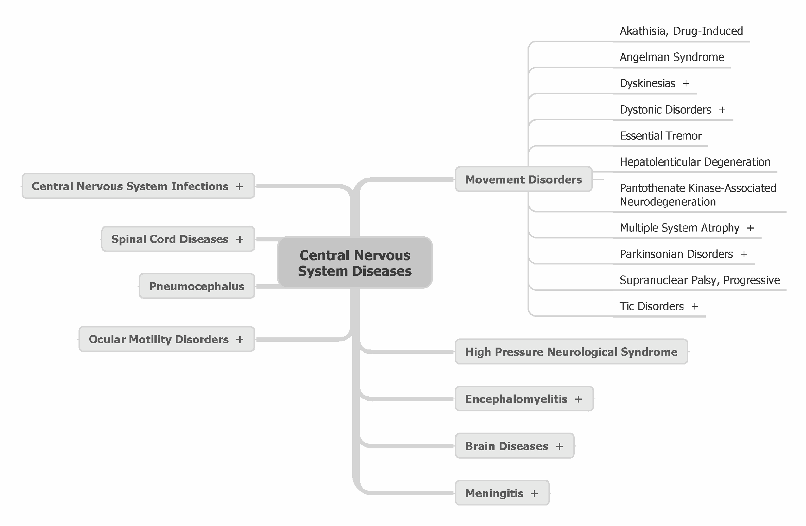

| Up | Next | Tail |
In the earliest days, textual documents were the sole unit of retrieval and most of the initial IR systems were used to search bibliographic databases. Contrary to many modern-day IR systems, they used information from references to documents instead of the contents of the documents themselves for searching. This had two main reasons. First, there was only very limited information storage capacity available and documents could only be represented by punched data cards. Information retrieval in that day and age constituted finding cards that had holes in the right places [157]. As such, documents could only be represented by the presence of a very limited number of “terms.” Second, small-sized controlled vocabularies which unambiguously and precisely represented the content of documents had been in use for a long time in libraries [105]. Obvious vocabularies of choice were the indexing systems commonly used by libraries, although other domain-specific thesauri were also used [157]. Documents were treated in the same fashion as library books; trained annotators would assign to them the terms by which the documents were to be indexed in the retrieval system.
Later, as computing power and storage space increased, the assigned indexing terms were gradually replaced by terms that can be found in the actual content of the documents, i.e., their vocabulary. This development was further accelerated by a rapidly increasing number of documents and document types that made manual annotations prohibitively expensive. In the Cranfield experiments, a controlled study was performed to measure the effect of various factors on retrieval effectiveness [75]. In Cranfield II, the indexing languages constituted the performance variable under investigation and the aim was to investigate the retrieval effectiveness of systems using different indexing languages and methods [74]. Here, it was found that retrieval based on vocabulary terms (or: full-text indexing) performed better than retrieval based on assigned indexing terms. This finding was later corroborated by Salton [275] who lead the development of the SMART system in the 1960s [186].
The effectiveness and popularity of indexing using assigned terms and controlled vocabularies further waned, as the size of the documents and collections grew larger (the Cranfield experiments used only 1,400 documents). Today, most of the early retrieval systems have been replaced by full-text search systems, with well-known web search engines including Google, Bing, and Yahoo! as prime examples. As to search engines using assigned indexing terms, MEDLINE is a prime example of such an IR system from the 1960s that still exists today [177].
Unlike assigned terms from controlled vocabularies, the terms occurring in a document are only constrained by the grammar of the language and the imagination of the author. They are, as such, noisier and more prone to ambiguity. Despite the popularity of using full-text indexing, the clear semantics and manual labor involved with assigning indexing terms to documents has many merits, ranging from enabling browsing facilities of a collection to enabling result list segmentation and query refinement [157, 257]. Let’s refer to the broad range of assigned indexing terms (whether they originate from global classification schemes, thesauri, ontologies, or anything else) as concept languages and to the terms themselves as concepts. In this thesis, then, concepts are defined to be cognitive units of meaning that have been formalized in a knowledge structure such as a controlled vocabulary, thesaurus, or ontology. Furthermore, we impose the restriction that such concepts should be agreed upon by a number of people (who typically are domain experts). This definition includes, for example, concepts taken from thesauri such as Medical Subject Headings (MeSH), but also Wikipedia articles (as captured, for example, in the DBpedia knowledge base). It excludes, for example, user-generated tags (such as those generated through social bookmarking websites), since they are typically agreed upon by only a single user. Figure 1.2 shows an excerpt of the MeSH thesaurus which will be further introduced in Chapter 3.

Recent semantic web initiatives have sparked a renewed interest in the discussion, development, semantics, and interoperability of concept languages [15, 33, 292]. Berners-Lee et al. [33] define an ontology as a structure of well-defined, i.e., unambiguous, concepts. Ontologies define objects as well as their relations and properties, with an accompanying logic allowing inference. The semantic web, then, is envisaged to be a layer over the current World Wide Web defined in terms of such concepts. To further this goal, the semantic annotation of web pages, their contents, or any other kind of resource using concepts that can not be directly derived from their content is gaining in popularity [6, 110, 251, 306]. In a way, this is a step “back” towards the controlled vocabularies that were in use in the early days of IR [292]. However, recent advances in information extraction have ameliorated the need for manual, labor-intensive mappings. Later in this thesis, in Chapter 6, we will look at several methods for automatically mapping queries to concepts. Furthermore, we will also introduce a method that leverages the manual annotations of documents as well as their full-text representations to improve end-to-end retrieval performance. As we will see later, manual annotations and controlled vocabularies can effectively be used in conjunction with full-text indexing to improve information access. We will present, implement, and evaluate various intuitions about leveraging controlled vocabularies and manual annotations to improve end-to-end retrieval performance by introducing ways of combining information from documents, concept languages, and relevance assessments.
| Up | Next | Front |